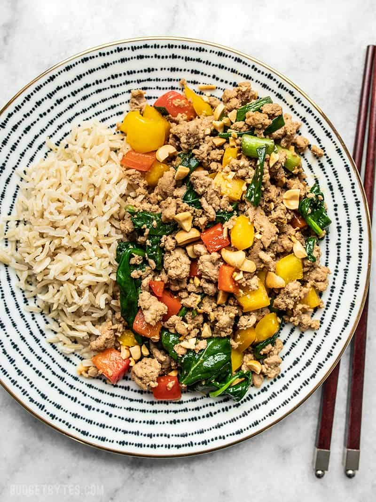

Turkey Stir Fry

I seriously never get tired of super easy stir fry dinners! I mean, what’s not to love?
Only a few ingredients, you can work in a TON of vegetables, and they’re super fast!
Using ground meat makes them even easier, because there’s no cutting or slicing raw meat (not a fan of this task).
This Ground Turkey Stir Fry is especially great because it’s so versatile. Use whatever vegetables you have on hand,
make it spicy or mild, serve it with rice, noodles, or with shredded cabbage for a low carb option.
Scroll down for more deets on those options!
Ingredients
Sauce
- 1/4 cup soy sauce
- 1/2 tbsp toasted seseme oil
- 1/2 tbsp brown sugar
- 1 pinch red pepper flakes (optional)
- 1 tbsp water
Stir Fry
- 2 bell peppers
- 4 green onions
- 2 oz. spinach
- 2 tbsp cooking oil
- 2 cloves garlic, minced
- 19 oz. ground turkey
For Serving
- 1/4 cup chopped peanuts
- 2.5 cups cooked white rice
Steps
- Make the stir fry sauce by stirring together the soy sauce, toasted sesame oil, brown sugar, red pepper, and water until the sugar is dissolved. Set the sauce aside.
- Dice the bell peppers and slice the green onions.
- Heat the cooking oil in a very large skillet over medium heat. Once hot, add the ground turkey and minced garlic.
Stir and cook until the turkey is cooked through and no water is left pooling on the bottom of the skillet (8-10 minutes.)
- Once the turkey is cooked and the moisture has evaporated, add the bell pepper and green onions to the skillet.
Stir and cook for about 2 minutes more, then add the spinach and continue to cook just until it is about half wilted (1-2 minutes).
- Pour the stir fry sauce into the skillet. Continue to stir and cook the turkey and vegetables until everything is coated in sauce and the spinach is fully wilted (about 2 minutes more).
- Serve about 1 cup of the stir fry mixture with 1/2 cup rice and a sprinkle of chopped peanuts over top.